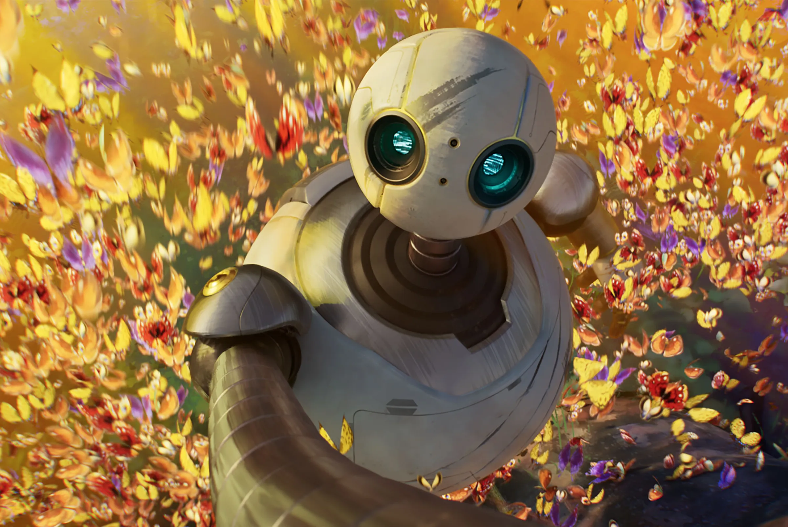

Meer Nieuws
The Wild Robot: Dreamworks gaat voor de oscar
Oscar-winnaar stroomt Netflix binnen
Volg ons:


Ontmoet Pesto de pinguïn: Waarom dierenvideo’s zo snel viral gaan op Social Media

Joker Folie à Deux flopt hard: Waarom dit slecht is voor de filmindustrie
Verwatert het theater(?)
Extra voorstelling Tsjittie Tsjittie Beng Beng
Meld je aan voor de nieuwsbrief
3 jaar verder: Wie wordt nou de nieuwe Bond?
The Wild Robot: Dreamworks gaat voor de oscar
Oscar-winnaar stroomt Netflix binnen
Volg ons: